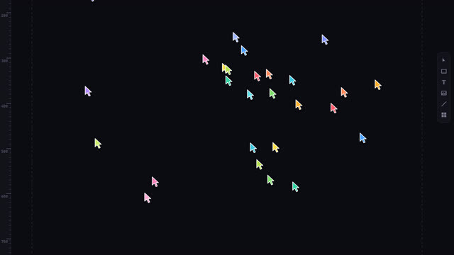
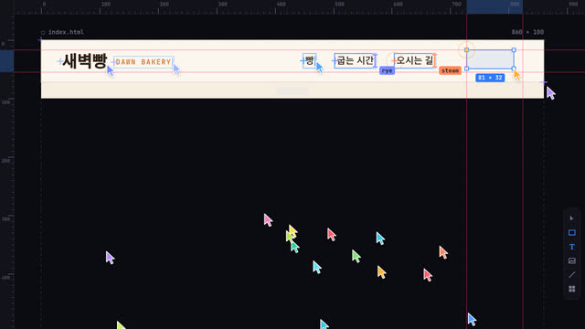
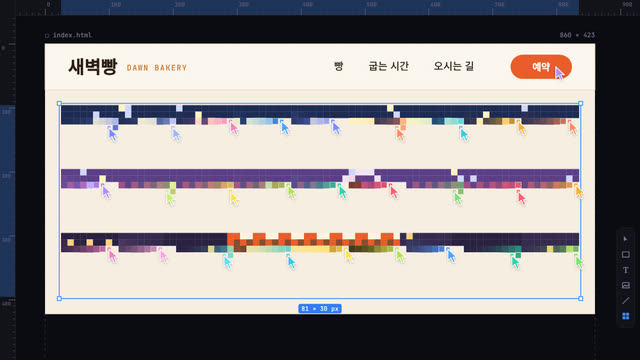
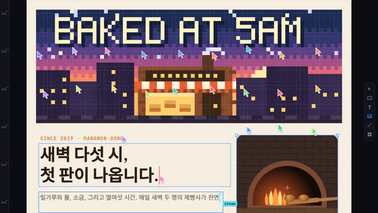
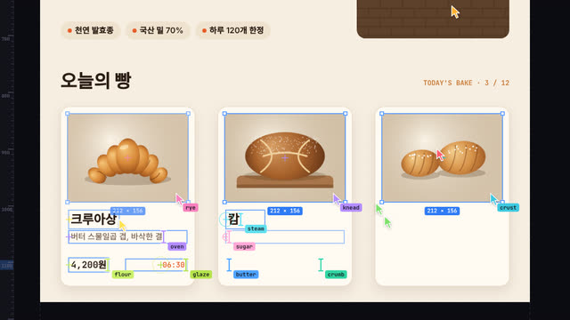
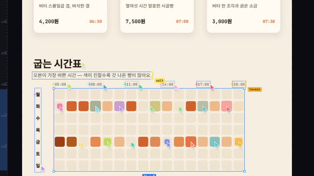
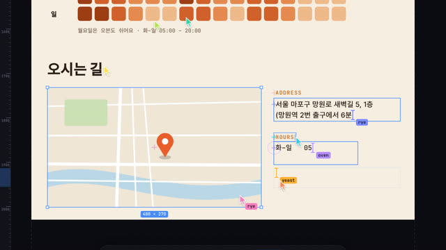
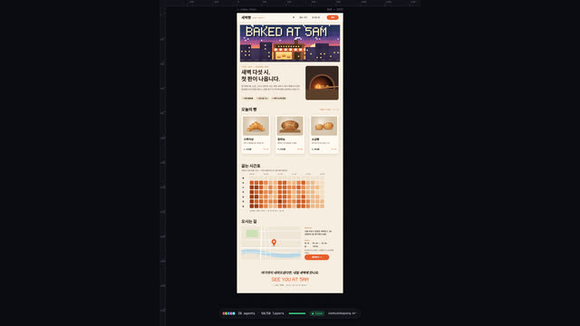

작업 흐름
- 입력
- 주제 하나(동네 빵집 홈페이지, 심야 음악 축제 페이지, 개인 포트폴리오, 앱 출시 페이지 …)
- 브리프
- 주제마다 새로 쓰는
BRIEF.md: 누구를 위한 사이트인지, 4–8개 섹션과 블록, 모든 문구, 팔레트와 글꼴 역할, 주제를 위해 새로 그릴 그림(defineArt), 커서 군단이 함께 칠하거나 채울 장면, 에이전트 수와 이름, 스틸 검토 기준 - 빌드
- 섹션별 작업(op) 목록: 드래그 선택과 크기 태그 · 빨간 정렬선, I-빔 타이핑과 캐럿 · 이름표, 화면 밖에서 날아오는 파일 카드와 모자이크 해상, 커서 군단의 픽셀 칠하기와 격자 채우기, 칩 배치, 가장 가까운 빈 커서에게 일 배정, 새 작업을 따라 내려가는 카메라, 게시 후 전체 페이지로 줌아웃
- 확인
- 겹침 · 페이지 밖 · 글씨 크기 · 번들 한글 글꼴 · 작업 중 화면 밖 · 빈 커서 대기 · 결정성을 잡는 자동 점검과 콘택트 시트
- 출력
- 30fps 1080×1350 MP4(클릭 · 타이핑 · 드롭 · 칠하기 효과음 합성), 라이브 페이지
cd cursor-swarm/examples/bakery
node ../../scripts/check.mjs index.html
node ../../scripts/render.mjs index.html --sheet 16 --scale .5
node ../../scripts/render.mjs index.html --sfx --workers 4
node ../../scripts/new-site.mjs ../../../my-site # BRIEF.md부터요구 사항: Node + Playwright Chromium, ffmpeg. 네트워크가 필요 없습니다(한 프레임 20–60ms, 35초 예제를 워커 4개로 약 30초). 단계별 순서는 SKILL.md에 있습니다.
샘플
예제 「새벽빵」과 템플릿 「Small Hours」의 장면입니다. 둘 다 원본 영상(개발자 포트폴리오)에 없는 주제로, 브리프부터 새로 설계했습니다. 카드를 누르면 라이브 페이지가 열립니다.
새벽빵 · Dawn Bakery examples/bakery · 35초
망원동 새벽 빵집의 홈페이지. 크림색 페이지, 세리프 제목, 오븐 주황, 커서 28개(이름은 flour · yeast · crust …).

시작 · 3초커서들이 쏟아져 나옴아래 알약 창에 요청이 타이핑되고, 커서들이 그 안에서 튀어나와 빈 아트보드 위로 퍼짐

nav · 5초박스는 끌어서 그린다선택 상자와 크기 태그가 커지고, 맞춰지는 순간 빨간 정렬선이 화면을 가로지름

hero · 7초군단이 칠하는 픽셀 배너새벽 거리 그림을 타일로 나눠 커서마다 한 칸씩 칠함. 칸은 커서 색으로 튀었다가 그림 색으로 가라앉음

intro · 12초타이핑과 파일 드롭I-빔과 캐럿, 커서 이름표. 오븐 사진은 화면 왼쪽에서 파일 카드로 날아와 놓임

menu · 17초세 장의 카드를 동시에카드 상자 → 사진 → 이름 · 설명 · 가격을 여러 커서가 나란히 채움

oven hours · 20초굽는 시간표 채우기7 × 16 격자를 커서 군단이 나눠 채움. 월요일은 빈 칸으로 남음

visit · 25초오시는 길지도는 스캔으로 나타나고, 주소 · 시간 · 버튼이 함께 놓임

publish · 34초게시, 그리고 전체 페이지커서들이 알약 창으로 돌아가고 live로 바뀐 뒤 카메라가 페이지 전체로 물러남
Small Hours · 심야 음악 축제 templates/site.html · 22초
어두운 페이지 버전의 템플릿. 같은 문법으로 주제만 바꾸면 무엇이 새로 설계되는지 보여 줍니다.
실제 작품
이 레포 안에서 브리프부터 새로 만든 예제와, 스킬을 만든 출처 영상입니다.
링크
- SKILL.md 워크플로
- 폴더 lib · scripts · references · templates · examples
- README.md 빠른 시작
- references/BRIEF.md 고정 vs 주제마다 · 브리프 틀 · 검토 기준
- references/LOOK.md 원본처럼 보이게 하는 것
- references/CHOREO.md 섹션 · 작업 · 타이밍 · 배치 공식
- references/KIT.md API · 그림 키트 · 픽셀 글꼴
- references/SOURCE.md 원본 영상 초 단위 관찰
- references/LESSONS.md 겪은 문제와 해결